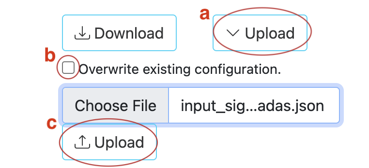

Converting Sigma Rules
What is Sigma
Sigma rules are a simple, yet powerful way for security teams to detect and respond to threats using SIEM tools. They are written in a YAML-based format and allow teams to identify suspicious patterns and behaviors across multiple systems and data sources, providing a unified view of security events.
Sigma rules offer several advantages over traditional detection rules, including platform-agnosticism, easy customization, and easy modification. They can be used with various SIEM systems, allowing teams to standardize their detection capabilities across their security stack and improve their overall security posture.
While Sigma rules are platform-agnostic and can be used with various SIEM systems, it is also possible to convert them to other formats, such as Padas rules. Padas is a new open-source tool that allows users to convert Sigma rules into various formats, including Padas. With this conversion capability, security teams can expand their detection capabilities and use Sigma rules with a broader range of security products. Padas can help reduce the time and effort required to write and maintain detection rules manually, enabling security teams to focus on more critical tasks such as threat analysis and response. Overall, the ability to convert Sigma rules to Padas rules offers significant benefits for security teams looking to enhance their detection and response capabilities.
Sigma to Padas
Please see PADAS Quick Start that clerifies install and using Padas, before starting Sigma to Padas Quick Start. In this section, only converting Sigma rules to Padas will be explained. After conversion, rest of steps will be same as Padas Quick Start.
This conversion tool is easy to use designed for Sigma version 2. More info about this version, you can check its GitHub repository.
Prerequisites
- Python (version 3 or above)
Overview of Quickstart
Step 1: Download
-
Download the latest version of padas-tools from official Padas github. If you don't know how to download it, you can check this Cloning a repository official GitHub documentation.
-
If it is downloaded as compressed, it is needed to uncompress properly such as
unzipcommand or using verious zip tools. Else, skip this step. -
You should see
sigma_v2_to_padasdirectory.
At this stage, make sure you have downloaded proper Python version.
Step 2: Start Padas
- You need to follow PADAS Quick Start to step 5.
Step 3: Converting Sigma to Padas Rules
-
There are
sigma_v2_to_padas.py,test/expected_output.json,test/input_sigma_rule.yml,test/test_to_rules.pyfiles undersigma_v2_to_padasdirectory that you download previously from GitHub.
1.sigma_v2_to_padas.pyis the converter script. This gives proper Sigma v2 (yml) to Padas (json) conversion.
Usage :python3 path/sigma_v2_to_padas.py input_path/input.yml output_path/ouput.jsonon terminal.
2. If you want totestyour conversions, you can trytest/test_to_rules.pyscript. This utilizes to check iftest/input_sigma_rule.ymlfile converted astest/expected_output.json. You can add your own Sigma v2 rules intest/input_sigma_rule.ymland their properly converted outputs intest/expected_output.json.
Usage :python3 path/test/test_to_rules.pyon terminal.
Step 4: Create Rules
At this stage, make sure you have Confluent Kafka and Padas is running.
-
Create Rule : You can add your converted rules either manually or uploading json file from Rules menu.
Adding manually :
Click New Rule button and fill in the details.
Upload json file :
- Click top of the Upload button.
- Click Choose File button. If you add same rule previously, you need to check
Overwrite existing configuration.box. - Click bottom of the Upload button.

Step 5: Test & Play
Test : You can test your rules as PADAS Quick Start - step 6.